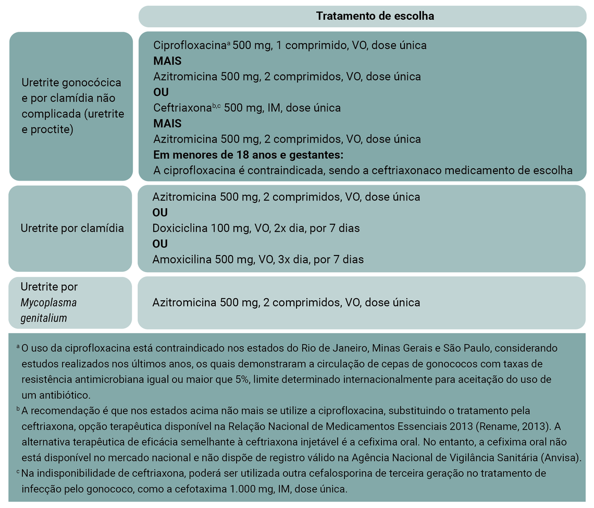
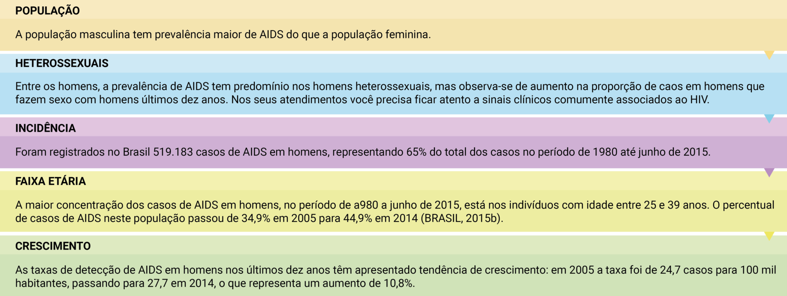
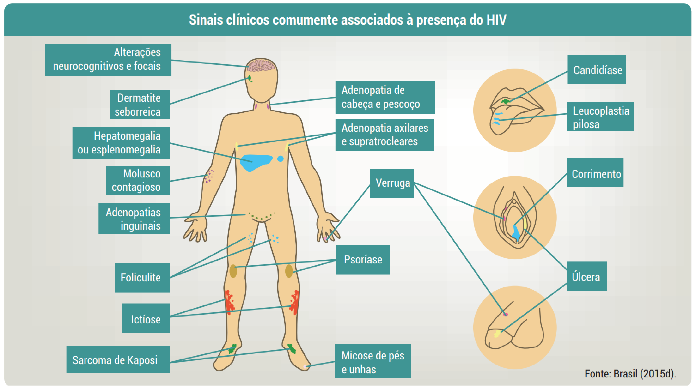
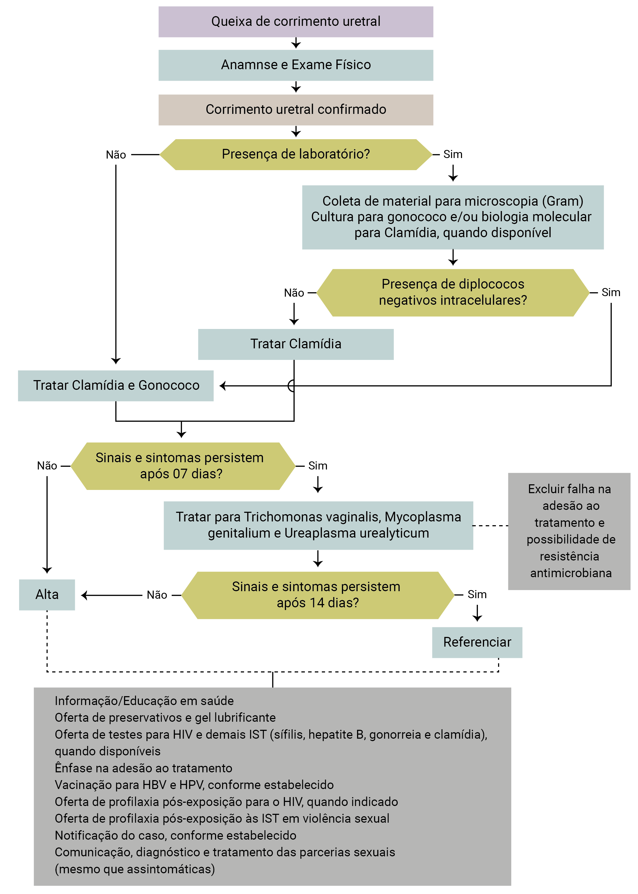
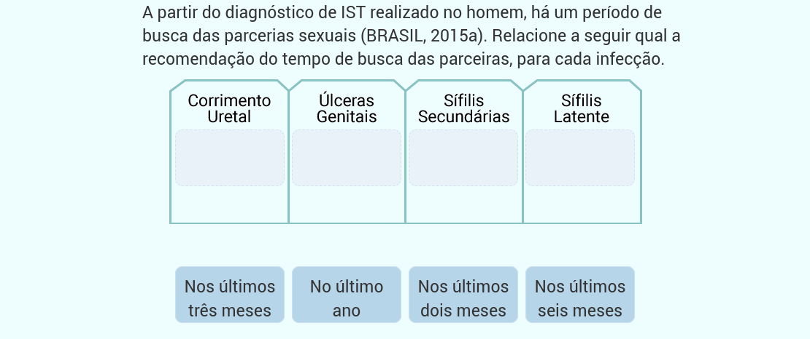
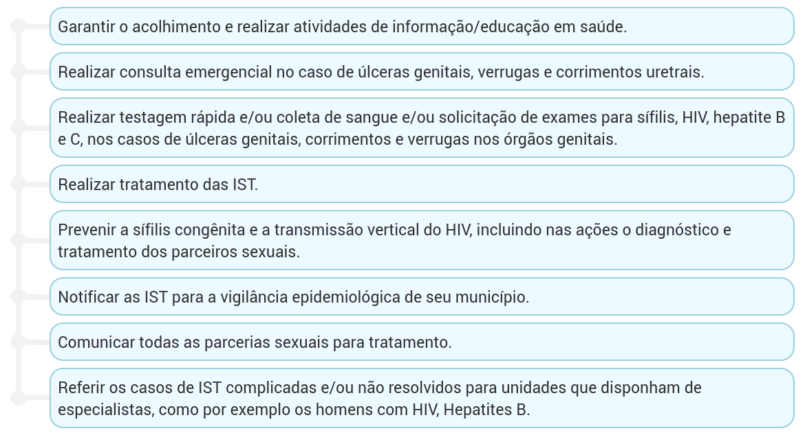

Sumário
Infecções sexualmente transmissíveis na população masculina
Nesta unidade
Infecções sexualmente transmissíveis (IST)
A atenção à saúde sexual e saúde reprodutiva (SSSR) na Atenção Primária à Saúde (APS) é de grande relevância para a prevenção e tratamento adequado das Infecções Sexualmente Transmissíveis (IST).
Uma pesquisa realizada no país mostra que 17% dos homens sexualmente ativos já tiveram alguma IST e que 18% destes não buscou nenhum tipo de apoio para tratamento (BRASIL, 2011a). Uma das causas, por vezes, pode ser o modelo hegemônico de masculinidades, que ao valorizar a força e virilidade, pode se traduzir em comportamentos de risco para a saúde (PINHEIRO; COUTO, 2012).
Vamos falar um pouco sobre as IST mais relevantes na população masculina, e acompanhar importantes estratégias para sua prevenção, tratamento e interrupção da cadeia de transmissão. Acompanhe nesta unidade quais são as principais IST entre os homens.
Uretrites
A uretrite caracteriza-se por inflamação da uretra acompanhada de corrimento causada por agentes microbianos que podem ser transmitidos por relação sexual vaginal, anal e oral. O corrimento uretral pode ter aspecto que varia de mucoide a purulento, com volume variável, estando associado a dor uretral (independentemente da micção), disúria, estrangúria (micção lenta e dolorosa), prurido uretral e eritema de meato uretral, frequentemente causada pelos agentes etiológicos Neisseria gonorrhoeae e Chlamydia trachomatis.
As uretrites apresentam como fatores de risco (BRASIL, 2015a):
- idade jovem;
- baixo nível socioeconômico;
- múltiplas parcerias ou nova parceria sexual;
- histórico de IST;
- uso inconsistente de preservativos.
Inúmeras vezes você irá se deparar com a necessidade de tratamento das uretrites de maneira imediata, seja pela oportunidade terapêutica ou pela ausência de exames específicos. Para tal, o Ministério da Saúde propõe a abordagem e tratamento das uretrites de maneira sindrômica. Utilize o fluxograma abaixo como norteador de sua conduta.
AIDS
No caso da AIDS (Síndrome da Imunodeficiência Adquirida), acompanhe os dados a seguir.
 Sífilis
Outra intercorrência frequente em homens que pode ser corretamente abordado de maneira sindrômica é a úlcera genital. As úlceras genitais são causadas por agentes infecciosos sexualmente transmissíveis e que se manifestam como lesões ulcerativas erosivas, precedidas ou não por pústulas e/ou vesículas, acompanhadas ou não de dor, ardor, prurido, drenagem de material mucopurulento, sangramento e linfadenopatia regional. (BRASIL 2015a)
Dentre as etiologias das úlceras, encontramos T. pallidum (sífilis primária e secundária); HSV-1 e HSV-2 (herpes perioral e genital, respectivamente); H. ducreyi (cancroide); C. trachomatis, sorotipos L1, L2 e L3 (LGV); K. granulomatis (donovanose).
A sífilis primária, também conhecida como “cancro duro”, ocorre após o contato sexual com o indivíduo infectado. O período de incubação é de 10 a 90 dias (média de três semanas). A primeira manifestação é caracterizada por uma úlcera, geralmente única, que ocorre no local de entrada da bactéria (pênis, vulva, vagina, colo uterino, ânus, boca, ou outros locais do tegumento), indolor, com base endurecida e fundo limpo, rica em treponemas. Esse estágio pode durar entre duas e seis semanas, desaparecendo espontaneamente, independentemente de tratamento.
A sífilis secundária surge em média entre seis semanas e seis meses após a infecção. Podem ocorrer erupções cutâneas em forma de máculas (roséola) e/ou pápulas, principalmente no tronco; eritemata palmo-plantares; placas eritematosas branco-acinzentadas nas mucosas; lesões pápulo-hipertróficas nas mucosas ou pregas cutâneas (condiloma plano ou condiloma lata); alopécia em clareira e madarose.
A sintomatologia pode desaparecer espontaneamente em poucas semanas. Mais raramente, observa-se comprometimento hepático, quadros meníngeos e/ou até oculares, em geral uveítes(BRASIL,2015a).
O tratamento da sífilis está detalhado no Protocolo Clínico e Diretrizes Terapêuticas para Atenção Integral às Pessoas com Infecções Sexualmente Transmissíveis. O link para acessar este material está disponível nas sugestões de leitura complementar no final desta unidade.
Para o manejo sindrômico do diagnóstico e tratamento da úlcera genital no homem, faça uso dos fluxogramas propostos pelo Ministério da Saúde:
Especificamente a sífilis que encontra-se em recrudescência no Brasil e tem representado um grande problema de saúde pública no país. O não tratamento dos parceiros sexuais é uma das causas da sífilis congênita. Dentre as gestantes que realizaram pré-natal e tiveram o diagnóstico de sífilis, somente 18,2% tiveram o parceiro tratado (BRASIL, 2015c).
Hepatite B e C
A Hepatite B pode se desenvolver de duas formas, aguda e crônica.
A aguda é quando a infecção tem curta duração e a forma crônica é quando a doença dura mais de seis meses.
O risco de se tornar crônica depende da idade na qual ocorre a infecção. Quando a infecção inicia no nascimento ou em menores de um ano de idade o risco de cronificação da hepatite B chega a 90%; em adultos, o índice cai para 5% a 10%. Apesar da progressão da cobertura vacinal e acesso ampliado às orientações para prevenção das IST, ainda há um crescente número de diagnósticos de hepatite B, aproximadamente 10.000 novos casos são detectados e notificados anualmente no Brasil (BRASIL, 2015b).
Na Hepatite C a transmissão sexual é pouco frequente, no entanto, a presença de uma IST, como lesões ulceradas em região anogenital constituem-se um importante facilitador de transmissão, particularmente na população de homens que fazem sexo com homens.
Abordagem na atenção primária das IST
Deve-se ressaltar que a maioria das pessoas infectadas por uma IST é assintomática e que a duração e a transmissibilidade da infecção são maiores quando menor for o acesso ao tratamento (BRASIL, 2015a).
Você, como profissional de saúde, precisa estar atento durante os atendimentos que realiza para não perder a oportunidade de realizar diagnóstico e tratamento, bem como orientar com conhecimentos técnico-científicos atualizados e recursos disponíveis para que todos realizem sexo seguro, prevenindo as IST.
Ressalta-se que o atendimento imediato de uma IST não é apenas uma ação curativa, mas oportuniza e visa à interrupção da cadeia de transmissão, à prevenção de outras IST e de complicações advindas destas infecções.
Para a interrupção da cadeia de transmissão, é importante que você converse com o usuário com diagnóstico de IST sobre as suas parcerias sexuais, que precisam ser informadas e orientadas para realizar exames diagnósticos a fim de se identificar possível infecção.
No contexto das ações de prevenção, orientar os homens para o uso do preservativo segue como uma das principais formas de atuação. Também devem fazer parte do processo de trabalho da AB a oferta de diagnóstico e tratamento para as IST assintomáticas e o manejo de IST sintomáticas com ou sem exames laboratoriais, ações de educação em saúde e ampliação do acesso da população masculina aos serviços de saúde.
Uma estratégia para a interrupção da cadeia de transmissão das IST é a abordagem relacionada a diagnóstico precoce dos casos assintomáticos. O Ministério da Saúde propõe que seja realizado rastreamento com exames de sífilis, gonorreia, clamídia, HIV para pessoas que são diagnosticadas com alguma outra IST e para populações em risco, conforme estudos, dentre as quais estão gays, homens que fazem sexo com homens, profissionais do sexo, travestis/transexuais e usuários de drogas.
Uma estratégia importante para o diagnóstico precoce das ISTs é a disponibilização de testes rápidos para sífilis, HIV, Hepatite B e C nas Unidades Básicas de Saúde (UBS). Os kits para estes exames são distribuídos pelo Ministério da Saúde para os municípios por meio dos estados. Esta nova tecnologia se caracteriza pela execução, leitura e interpretação dos resultados feitos em, no máximo, 30 minutos.
Os testes rápidos para sífilis, assim como os testes rápidos para as Hepatites B e C, são exames de triagem sorológica, ou seja, há necessidade de exames laboratoriais complementares para o diagnóstico. No caso do teste rápido de HIV o diagnóstico é definido pela realização do próprio teste rápido.
Ainda com relação à prevenção do HIV, uma forma disponível é o uso de medicamentos antirretrovirais após o contato sexual desprotegido com portador do HIV. Esta é uma estratégia denominada PEP (sigla em inglês de profilaxia pós-exposição).
Esta medida consiste na prescrição dos medicamentos em até 72 horas após o contato com o vírus do HIV. O tratamento dura 28 dias e o atendimento é considerado de emergência. O protocolo clínico se divide em quatro seções, que correspondem às etapas de abordagem da pessoa exposta ao risco de infecção pelo HIV, que incluem:
A infecção pelo HIV tem um acometimento sistêmico, sendo necessário, portanto, estar atento a sinais clínicos (BRASIL, 2015d) comumente associados à doença. Acompanhe no vídeo a seguir:
Considerando o processo que envolve a infecção, em todas as etapas, como diagnóstico ou tratamento um destaque importante a ser dado é a garantia da confidencialidade e da ausência de discriminação.
As atividades informativo-educativas desenvolvidas pelos agentes comunitários de saúde (ACS) nos domicílios e pelos profissionais nas UBS podem chamar a atenção dos homens para a realização dos testes rápidos para sífilis, HIV e Hepatite B e C.
Na unidade básica de saúde, deve ocorrer o acolhimento, diagnóstico precoce, assistência e, quando necessário, encaminhamento das pessoas diagnosticadas com IST às unidades de referência para atendimento especializado.
A atenção integral a esse grupo de agravos necessita do fortalecimento e da integração entre os diferentes níveis de atenção à saúde existentes no município/região. Desta forma, é importante que você procure conhecer se no seu município existe referência pelo SUS para atendimento especializado para dar suporte para diagnóstico e tratamento de IST. Lembre-se que você como profissional AB tem a responsabilidade de acompanhar os usuários residentes em seu território adscrito mesmo que estes estejam sendo atendidos em serviços de referência.
É importante lembrar, ainda, que no caso da Hepatite B, a vacina está disponível na rede pública. A vacinação para Hepatite B inclui três doses administradas com intervalo de um mês entre a primeira e a segunda dose e de seis meses entre a primeira e a terceira dose, constando no calendário de vacinação desde o nascimento. A partir de 2016 a vacinação contra Hepatite B está disponível nas unidades de saúde para toda a população, independente da idade.
Como profissional de saúde da AB, atuando na atenção integral à saúde do homem com IST, está sob sua responsabilidade (BRASIL, 2015a):
Nesta primeira unidade conhecemos algumas das principais IST que acometem o homem. Também discutimos ações que têm como objetivo a interrupção da cadeia de transmissão dessas infecções, e com isso reduzir o número de casos e suas complicações.